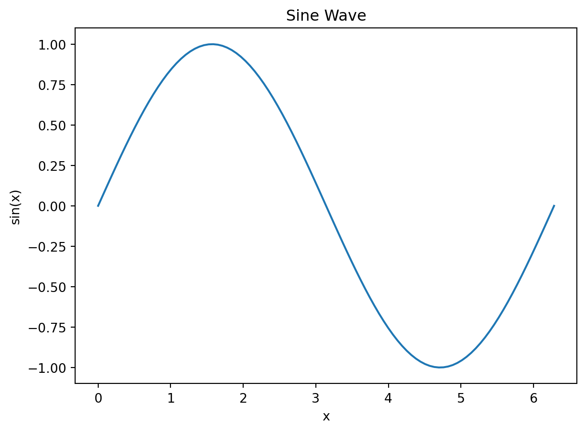

flowchart TD
style SIG fill:#e3f6f5,stroke:#64b5f6,stroke-width:2px,rx:10,ry:10
style ADAPT1 fill:#f5f5f5,stroke:#90caf9,stroke-width:2px,rx:10,ry:10
style PROMPT fill:#e3f6f5,stroke:#64b5f6,stroke-width:2px,rx:10,ry:10
style LLM fill:#fffde7,stroke:#ffd54f,stroke-width:2px,rx:10,ry:10
style RAW fill:#f5f5f5,stroke:#90caf9,stroke-width:2px,rx:10,ry:10
style ADAPT2 fill:#e3f6f5,stroke:#64b5f6,stroke-width:2px,rx:10,ry:10
style PRED fill:#b2f7ef,stroke:#00796b,stroke-width:2px,rx:10,ry:10
SIG["Signature + Input + Demos"]
ADAPT1["Adapter"]
PROMPT["Formatted Prompt"]
LLM["LLM"]
RAW["Raw Response"]
ADAPT2["Adapter"]
PRED["Prediction"]
SIG --> ADAPT1 --> PROMPT --> LLM --> RAW --> ADAPT2 --> PRED
How DSPy really works [wip]
Lots of people find DSPy magical (I am one of them). To some this is unsettling as they feel they lose control over the LLM and the prompt, by the end of this tutorial you will feel that you have both control and magic. We will build our own (simplified) implementation of all major dspy component in a way that we will control and trace the whole flow of the prompt and its optimization. I want to show you this, not because you need it to use DSPy, but because you need it to grok and the paradigm (I call it Intent-Oriented Programming) behind it.
Intent-Oriented Programming is a programming paradigm where you explicitly declare the intent of your task—the inputs, desired outputs, success criteria (through metric and training set), and necessary context—without specifying exact implementations. This structured intent can then be automatically specialized, optimized, and adapted to various execution engines (AI models, human agents, APIs, or future intelligent systems). This clearly separates what you want from how it’s achieved, enabling maximum flexibility and continuous improvement.
At its core, in DSPy, information flows like this:
A signature contains an instruction (this goes into the system prompt and is ‘trainable’), input and output fields with their structure (e.g. Int, Float, Json, Literal, dataclass, etc). Input and output are generally not trainable nor is the way that they are presented to the LLM.
To prompt an LLM, one would make a call to a program (dspy.Predict is the simplest one) with a signature and in the call the user (or programmer/you) would fill up the call with the current input you want to provide.
Your current inputs and the signature (instructions, list of inputs and outputs name and datatype) would be given to an adapter. The demos (if any) are also passed to the adapter at this stage. Demos are few-shot examples that show the LLM what you expect. At that stage, the adapter transforms all that into the ‘formatted prompt’. It puts (interpolates) the instruction into the system prompt template as well as the names of the inputs and the names of the outputs and their type. It formats the demos (if present) as example input-output pairs in the prompt. It always puts (interpolates) your ‘current’ inputs into a user message. Then a prompt is ready and sent to LLM providers (leveraging litellm).
This means that your current input + your signature + demos + an (your?) adapter are all (and the only) pieces needed to create the actual prompt. In DSPy, it’s not yet well documented (I’m working on that), but you can absolutely make your own adapter. If you do, you build your own prompt by creating these modular pieces: the input, the signature, the demos formatting, the adapter.
When the LLM responds, the parser in the adapter picks it up and parses it into the output python types that were specified by the signature.
The demos part is interesting. They can come from three places: hardcoded in your module (predictor.demos = […]), passed at call time (predictor(input=x, demos=[…])), or set by an optimizer during compilation. The adapter decides how to format these demos into the prompt (as few-shot examples before your actual input).
All of this is inspectable. You can see the formatted prompt, the demos being used, the parsing logic. The ‘magic’ is just modular composition of these pieces. ## LaTeX Example
Here is a simple equation:
\[ E = mc^2 \]
Plotting with Python
import matplotlib.pyplot as plt
import numpy as np
x = np.linspace(0, 2 * np.pi, 100)
plt.plot(x, np.sin(x))
plt.title('Sine Wave')
plt.xlabel('x')
plt.ylabel('sin(x)')
plt.show()
Code Visibility
Visible code with output:
print("This code is shown, and so is the output.")This code is shown, and so is the output.Hidden code but output shown:
secret = 42
print(f"The secret is {secret}")The secret is 42Code with no output:
unused = 1 + 1